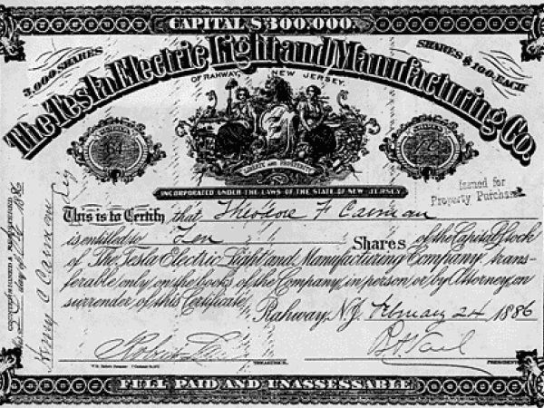
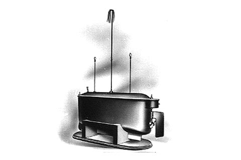

Nikola Tesla was born at midnight between the 9th and 10th of July, during a lighting storm
NIKOLA TESLA
The Great Inventor

Here's a time line of Nikola Tesla's life:
1856
1862
Tesla starts elementary school in Smiljan, where he learned to speak german, mathematics and religion.
1863
After the death of his fourteen year old brother Dane, the Tesla family moved to Gospić where he continues elementary school.
1866
Tesla starts Lower real gymnasium in Gospić.
1870
Tesla starts Higher real gymnasium in Rakovac (a village near Karlovac). The school was organized according to german and austrian schools and was one of the best high schools at the time. Professor Martin Sekulić (1833- 1905) taught Tesla mathematics and physics.
1873
After graduating from Rakovac, Tesla returns home and suffers from cholera for nine months.
1874
Tesla moves to Tomingaj (a village near Gračac) to recover .
1875
Tesla enrolls to the Polytechnic University in Graz with a scholarship from the Military frontier.
1876
After the Military frontier fell apart Tesla lost his scholarship and doesn't manage to finish his second year of university. In an attempt to cover expenses he begins gambling, playing billiards and poker.
1878
Tesla leaves university before his third year final exams.
1879
Tesla works in Maribor for a short time. After the death of his father he moves back to Gospić and works at the Real gymnasium.
1880
Tesla leaves for Prag, where he tries to enroll in university. He doesn't get in but conitnues to go to lectures and use the library, where he follows new advancements in electro engineering.
1881
While living in Budapest Tesla begins working as a draftsman in the Central Telegraph Office of Hungary. He participates in expanding the first telephone network in the city.
1882
While out for a walk with his friend Tesla has a vision and discovers the rotating magnetic field. In autumn he moves to Paris and begins working for the Edison Continental Company.
1883
Tesla moves to Starsbourg where he builds his first prototype of the induction motor. He goes to Zagreb to acquire a passport.
1884
Tesla leaves for New York with a referral from Charles Batchellor and begins working for Edison.
1885
After leaving Edison, Tesla starts his own company called the Tesla Electric and Manufacturing Company and patents his first inventions.
1886
During an economic crisis in the U.S. Tesla's company goes bankrupt. He is forced to dig ditches for cabels and the sewer system in New York for two dollars a day.
1887
Tesla begins a new company called the Tesla Electric Company with a loan from A.K. Brown, the director of Western Union. He registers his most important patents: multiphase system of transmitting electricity, the induction motor, transformers and generators.
1888
Tesla held a lecture about the advantages of alternating current at the American Insitiute of Electrical Engineers. In Pittsburg he signs a contract with George Westinghouse.
1889
He visits Europe for the first time after leaving for the U.S.
He visits Paris and Lika. Returning to New York he opens a laboratory on Grand Street. Up until 1892 he lives in the Astor Hotel.
1890
Tesla begins researching high voltage and high frequency currents in his laboratory on 33-35 South Fifth Avenue in New York.
1891
Tesla recieves american citizenship. He holds a lecture about his experiments with high frequency and alternating currents and their usage in artificial lighting to the American Institute of Electrical Engineers. He registers many patents and develops the Tesla coil. He has a disagreement with J.J. Thornson who impedes on Tesla's discovery of the electron.
1892
Tesla's second visit to Europe starts with lectures in London and Paris. His mother dies in April. He visits Budapest, Zagreb and Belgrad. In Zagreb he holds a lecture about the advantages of alternating currents and construction of a hydroelectric plant at Plitvice lakes. He moves to the Gerlach Hotel . He is named the vice president of the American Institute of Electrical Engineers for two years.
1893
The World Exibition is held in Chicago, it is dedicated to advancements in eletrical engineering. Tesla and George Westinghouse triumph with their presentation of alternating current. In St. Louis Tesla publically presents radio communication.
1894
Thomas Camford, editor of the magazin Electrical World and vice president of the American Institute of Electrical Engineers, publishes the first book about Tesla's research. Tesla meets the Johnson family and they become lifelong friends.
1895
On March 13th a fire breaks out in his laboratory and inhibits him from discovering X-rays and publishing his discovery of the electron. He opens a new laboratory on 46-48 East Houston Street. The only earthquake to ever happen in Manhattan started in this laboratory.
1896
The first hydroelectric plant at the foot of Niagara falls is opened. Tesla patents his apparatus for creating ozone. Tesla becomes a honorary member of the Jugoslav Academy for Science and Arts.
1897
Tesla patents a series of inventions that are the foundation for mdern radio technology. He researches the possibilty of wireless transmission of electricity and patents his invention for electrical igniton of gasoline motors. He lives in the Waldorf-Astoria Hotel
1898
Tesla demonstrates his remote control boat and patents his device for remote control.
1899
Tesla moves to Colorado Springs and opens a laboratory there. He researches high frequency currents, discovers stationary waves and perfects his high frequency transformer, known as the Tesla coil. He was the first to receive radiowaves from the stars and discovers the procedure of listening to stars.
1900
On Long Island Tesla builds a tower for his world-wide system of wireless transmission of electricity with the financial help from J.P.Morgan.
1901
Gugliemo Marconi, uses Tesla's experiments and patents and manages to send the first wireless telegraph between Europe and North America.
1905
Tesla opens a laboratory on 165 Broadway.
1906
J.P. Morgan refuses to continue financing Tesla's world-wide system for wireless transmission on Long Island. Tesla invents the speedometer.
1907
Tesla builds his first model of the bladeless turbine, it functions by using the energy of fluids to create friction.
1908
Tesla tests his model of the bladeless turbine.
1909
Up until 1922 Tesla works on his first inventions tied to engineering. He creates drafts, drawings and calculations for his version of an airplane and tests steam and gas turbines.
1911
Tesla works on developing and testing his steam turbines in New York.
1913
George Westinghouse dies. Tesla writes about the role of science and discovery in eliminating the risk of war in The Sun.
1914
Tesla registers his patents for the bladeless turbine, speedometer, frequency meter, valve line and lightning rod. He opens an office in Woolworth tower.
1915
After selling the land where he worked on his world-wide wireless transmission of electricity, Tesla declares bankruptcy. The New York Times declare that Tesla and Edison will share the nobel prize.
1917
Tesla receives the Edison medal. Tesla's tower at Wardencliff is torn down. He publishes descriptions of the radar and spends most of his time feeding pigeons.
1918
Tesla moves to the St.Regis Hotel where he stays until 1923.Tesla moves to the St.Regis Hotel where he stays until 1923.
1919
Tesla's autobiography "My Inventions" is publsihed.
1922
Tesla's favourite white pigeon dies, he registers his patent for vacuumizing.
1923
Tesla moves to the Marguery Hotel.
1924
The St. Regis Hotel sues Tesla for 3299 dollars in upaid bills. Tesla meets the croatian sculptor Ivan Meštrović (1883-1962).
1925
Tesla's friend, Katharine Johnson dies and he moves to the Pennsylvania Hotel.
1926
Tesla receives an honorary doctorate from the University of Zagreb. He meets his nephew Sava Kosanović (1894-1956) for the first time.
1928
Tesla registers his patents for a vertical take-off flying machine, called the Apparatus for Aerial Transportation ( today known as the vertical short take-off and landing plane)
1930
Tesla works on improving the process of producing sulfur, iron and copper. He lives in the Governor Clinton Hotel.
1931
Thomas Alva Edison dies. The Times publishes Tesla's photograph on the cover on his 75th birthday. Many well-known scientists send him congratulations.
1934
Tesla moves to apartment number 3327 in the New Yorker Hotel and lives their until his death.
1936
Tesla suggests projects for developing a defence weapon, called the death ray. A ceremony marking Tesla's 80th birthday is held in Zagreb. Vladko Maček sends Tesla a telegraph congragulating him on his birthday. Tesla thanks him and states that he is equally proud of his serbian roots and croatian homeland.
1937
Guglielmo Marconi dies. Tesla receives an honorary doctorate from the Polytechnic University in Graz and University in Paris. He is hit by a taxi crossing the street.
1941
Tesla sends a message to all world academicians against nazis and fasizam.
1942
After many years out of the limelight Tesla sends a letter to "My brothers in America". He is seen in public for the last time during a visit toe U.S. from king Petar Karađorđević II .
1943
Tesla dies on Januray 7th, around 10.30 p.m. in apartment 3327 on the 33 floor of the New Yorker Hotel, he was 86 years old. The Supreme Court of America grants Tesla the rights to the invention of the radio.
“I don't care that they stole my idea . . I care that they don't have any of their own”
― Nikola Tesla